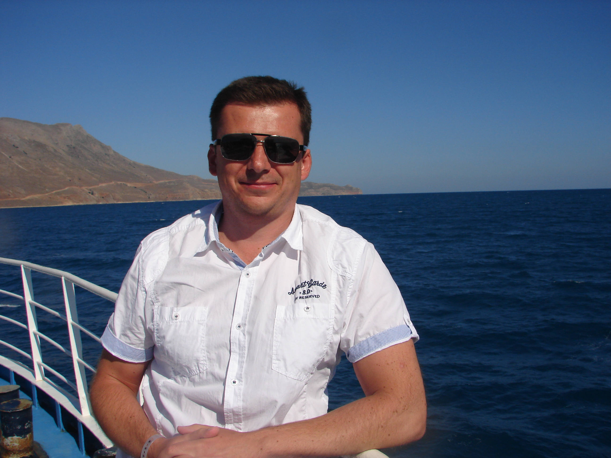

Про себе
Привіт! Мене звати Андрій. Мені 44 роки, виріс і мешкаю у місті Києві. Майже все своє доросле життя займався продажем телевізійної реклами. Подобається приймати участь у цікавих навчальних чи бізнес проектах. Закінчив Київський національний університет імені Тараса Шевченка за спеціальністю міжнародні економічні відносини. Також маю диплом перекладача з німецької мови. Непогано володію англійсбкою мовою, а якщо напрягтись, може шось згадаю і іспаньскою, і не тільки "Hasta la vista, baby"! Маю сім'ю, виховую двох чарівних бешкетників.
Зараз я навчаюсь на курсі з верстки на платформі Фрілансер по життю.
Під час навчання на курсі я планую:
- Познайомитись з цікавими людьми.
- Вдало пройти курс, виконуючі всі домашні завдання.
- Опанувати нову для себе професію з верстки сайтів.
- Допомогати дружині з реалізацією її проекта і розвивати свою власну кваліфікацію.
Хобі та цікавинки
Як багатьом з нас мені подобається подорожувати, поменше працювати і добре погуляти, короче жива людина, не робот. Не можу сказати, що я відвідав багато країн, скоріше навпаки, але подорож на острів Гаїті це мабуть точно моя найекзотичніша подорож до цього часу. Власне були сумніви щодо такої дальньої поїздки, але друзі та рекламні проспекти вплинули на моє рішення. Відпочинок був чудовим, але для себе зробив висновок, що для далеких подорожей треба виділяти більше часу ніж період звичайної відпустки. Час в дорозі, адаптація до країни, умов клімату, людей і т.д. забирє певні сили і потребують часу на відпочинок. Тому на мою думку бажано виділяти для далеких мандрів більше ніж 2 тижні. А коли повертаєшся до дому з далеких далечінь, ще раз розумієш, що живемо в прекрасній країні хто б що не казав.
Дуже люблю футбол, як грати, так і ходити на стадіон підтримати свою команду. Був активним учасником фанатського руху ФК "Динамо Київ" з 2-гої половини 90-х років. Дякуючи Богу особисто зміг побачити гру команди того часу під керівництвом нашого видатного тренера Лобановського В.В.. Звичайно "вишнькою на торті" для мене як вболівальника був виїзд на чемпіонат світу з футболу у 2006 році до Німеччини з нашою національною збірною з футболу.
Після відвідин деяких європейських країн, зацікавився відкриттям власної пивоварні і вже у 2017 році з моїм приятелем відкрили своє власне невелике виробництво під брендом Off Road brewery. Неоднарозово приймали участь у пивних крафтових фестивалях Києва, почали продавати власну продукцію у барах і ресторанах міста. Цей реальний бізнес кейс став для мене безцінним досвідом у ведені власної справи.
Після закінчення війни я:
- Привітаю з Перемогою всіх друзів і знайомих, особливо тих хто безпосередньо брав участь у захисті нашої країни.
-
Планую нарешті побачити всіх близьких та друзів, які були змущені:
- виїхати закордон;
- піти на війну;
- переїхати в іншу частину країни.
- Кожного року на річницю Перемоги вшановувати пам'ять всіх загиблих чоловіків та жінок, хто ціною власного життя захистив незалежність нашої держави.